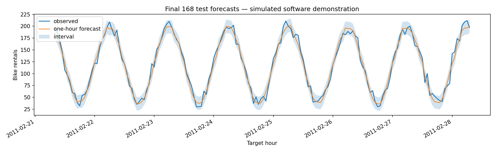

Data: SIMULATED demonstration fixture; not a real-data benchmark. Selected model: random_forest. Calendar is known at the target hour; counts and weather come from earlier hours. Evaluation rolls forward one hour at a time as actual observations become available.
| model | selected_from_validation | mae | rmse | r_squared | data_source |
|---|---|---|---|---|---|
| seasonal_naive_24 | False | 10.0216 | 12.1717 | 0.9562 | SIMULATED demonstration fixture; not a real-data benchmark |
| seasonal_naive_168 | False | 9.8973 | 12.0137 | 0.9573 | SIMULATED demonstration fixture; not a real-data benchmark |
| ridge_alpha10 | False | 7.4605 | 9.1395 | 0.9753 | SIMULATED demonstration fixture; not a real-data benchmark |
| random_forest | True | 7.0761 | 8.7191 | 0.9775 | SIMULATED demonstration fixture; not a real-data benchmark |
| hist_gradient_boosting | False | 7.4300 | 9.0496 | 0.9758 | SIMULATED demonstration fixture; not a real-data benchmark |
| model | validation_mae |
|---|---|
| random_forest | 6.6593 |
| ridge_alpha10 | 6.7138 |
| hist_gradient_boosting | 6.9074 |
| seasonal_naive_168 | 8.8162 |
| seasonal_naive_24 | 9.0973 |
| fold | training_rows | validation_rows | last_training_time | first_validation_time | mae | rmse | r_squared |
|---|---|---|---|---|---|---|---|
| 1 | 187 | 184 | 2011-01-15 18:00:00 | 2011-01-15 19:00:00 | 7.1137 | 8.8883 | 0.9756 |
| 2 | 371 | 184 | 2011-01-23 10:00:00 | 2011-01-23 11:00:00 | 6.5542 | 8.4482 | 0.9776 |
| 3 | 555 | 184 | 2011-01-31 02:00:00 | 2011-01-31 03:00:00 | 6.7128 | 8.5463 | 0.9777 |
| nominal_coverage | test_empirical_coverage | test_mean_width | calibration_radius | interpretation |
|---|---|---|---|---|
| 0.9000 | 0.9081 | 28.4178 | 14.2089 | Empirical interval diagnostic; temporal exchangeability is not assumed. |
